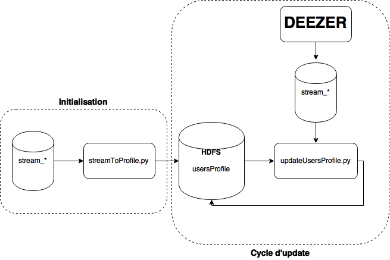
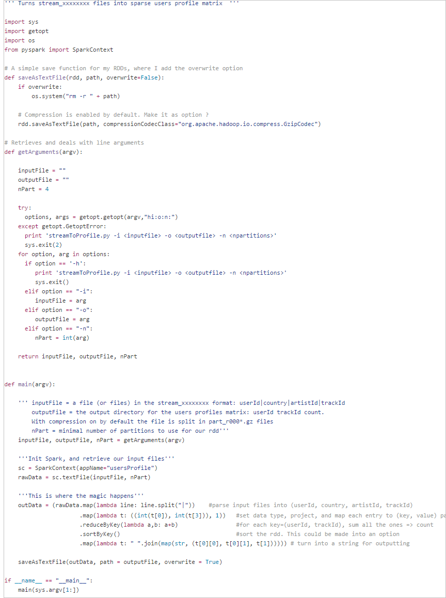
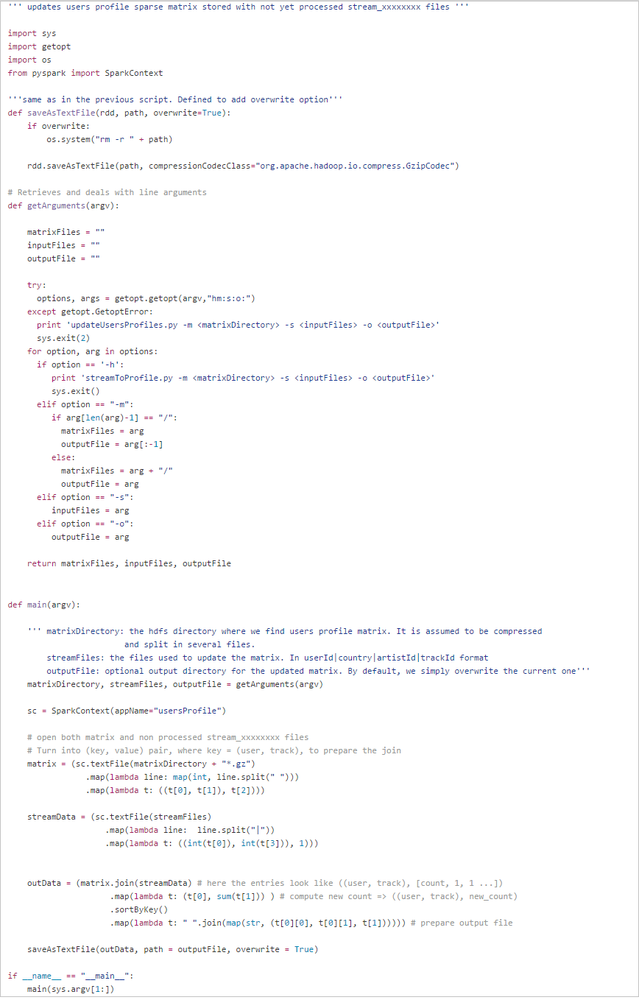

Exercice technique
Kevin Payet - 6 août 2015
For an English version, click on the corresponding link in the menu above.
Ce dossier contient les différents scripts réponses à un exercice technique pour le poste de Data Scientist.
On se place dans le contexte d'un site de musique en ligne.
Growth Data Analyst - Exercice Technique
Profil utilisateur
Afin d'analyser le comportement de nos utilisateurs nous récupérons l'ensemble de leurs écoutes réalisées sur Deezer depuis 2009. Dans le cadre de l'exercice, nous supposerons que nous stockons ces écoutes dans des fichiers plats, chacun de ces fichiers contient les écoutes réalisées un jour J :
Chaque fichier contient ~50M de lignes.
Nous avons ~16M d'utilisateurs actifs.
Notre catalogue contient ~35M de tracks.
Le format de ces fichiers est le suivant : ||| cat stream_20141201 | head -n 1 5464754|FR|542|79965994
- Nous souhaitons représenter chaque utilisateur par son profil d'écoutes. Ce profil doit être maintenu à jour régulièrement et de volume raisonnable afin d'être utilisé par le site en production.
a. Faire un schéma représentant la chaîne de traitement que vous proposez.
Réponse :
Les fichiers stream_xxxxxxxx contiennent le récapitulatif des écoutes de la journée, où chaque morceau écouté correspond à une ligne dans le fichier.
On souhaite convertir ces fichiers sous la forme d'une "utility matrix", où les lignes correspondent aux différents utilisateurs, et les colonnes aux différents morceaux. Les éléments de la matrice correspondent au nombre d'écoutes de chaque chanson par l'utilisateur.
Chaque utilisateur est ainsi représenté par un vecteur représentant ces préférences en matière de musique. On peut ensuite estimer la similarité entre deux utilisateurs en utilisant leurs vecteurs respectifs.
A vu du nombre total de morceaux (~35M), on peut se convaincre que la matrice ainsi créée aura une grande majorité d'éléments nuls (sparse matrix). Cela permet d'envisager d'autres formats de stockage pour la matrice, que le format naif sous forme de tableau bidimensionnel avec Nusers x Ntracks éléments (ici > 5e14 !).
Il existe plusieurs possibilités de format pour les matrices sparse. J'ai choisi le format COO (coordinate list), pour sa simplicité. Il consiste simplement à stocker, uniquement pour les éléments non nuls, les tuples (ligne, colonne, valeur).
Parmi les autres formats possibles, le format CRS (Compressed Row Storage) permet un gain de place un peu plus important. Toutefois, les opérations sont un peu plus compliquées, d'où mon choix de format. Dans un second temps, il serait bon d'étudier les éventuels gains de performance apportés par un autre format.
Mais intéressons nous d'abord à notre problème. Nous souhaitons transformer un fichier contenant des lignes au format Userid|Country|ArtistId|TrackId en matrice au format UserId|TrackId|Count.
Ce type de transformation peut être effectué de manière aisée par tout langage qui permet d'effectuer des opérations d'algèbre relationnelle (projection, join, group by ...). C'est le cas de R (avec le package dplyr par exemple), de Pig, Spark , etc.
Pour choisir l'outil à utiliser, j'ai créé un fichier de fausses données, de 50M d'entrées, au même format que les fichiers stream_xxxxxxxx. Avec R, j'ai ensuite converti ce fichier au format COO, .i.e sous forme de matrice sparse. Le fichier ainsi créé fait ~ 900 Mo, non compressé. Toutefois, il ne contient que les résultats pour une journée. Et, dans cet exercice, on ne souhaite pas simplement transformer chaque input dans le format décrit plus tôt, mais plutôt accumuler ces informations dans un fichier qui contiendrait l'historique de plusieurs années d'écoutes. Dans le fichier test que j'ai utilisé, chaque utilisateur apparait en moyenne 3.27 fois, ce qui est très peu. Personnellement, j'ai plus de 15000 morceaux dans ma bibliothèque. Je doute toutefois que l'utilisateur moyen ait autant de morceaux dans son historique d'écoute. Il est dur d'estimer ce nombre, mais je considèrerai qu'en moyenne un utilisateur de Deezer a écouté, depuis 2009, 200-300 morceaux. Cela signifie que dans le fichier final, chaque utilisateur apparait dans ~250 lignes (userId, TrackId, Count). On se retrouve donc avec une matrice de l'ordre de 100-200 Go.
Au vu de la taille de cette matrice, j'ai décidé d'utiliser Spark pour effectuer les opérations requises dans cette partie.
Je considèrerai que la matrice est stockée sur HDFS. Compte tenu de leur taille, les fichiers stream_xxxxxxxx n'ont pas à être forcément stockés sur HDFS, mais dans la suite, dans mon code, je considèrerai que c'est le cas (ce qui ne change pas grand chose).
Je vois le processus de cette manière:
Initialisation : Première création de la matrice représentant le profil d'écoutes des utilisateurs, à partir d'un ou plusieurs fichiers stream_xxxxxxxx.
Mise à jour de la matrice, de manière quotidienne, hebdomadaire, ou autre, selon besoins, à partir des fichiers stream encore non traités.

b. Ecrire dans le langage de votre choix le code correspondant.
Réponse :
J'ai utilisé l'interface Python de Spark, pySpark, pour écrire deux scripts qui effectuent les opérations présentées ci-dessus.
- streamToProfile.py permet de transformer un ou plusieurs fichiers d'input (stream_xxxxxxxx) en matrice Users x Tracks, qui est ensuite sauvegardée sur HDFS.
spark-submit streamToProfile.py -i hdfs:///deezer/fakeData -o hdfs:///deezer/usersProfile -n numPartitions

- updateUsersProfiles.py effectue la mise à jour de la matrice créée précédemment. Le script prend en input le directory de la matrice sur hdfs (où sont stockés les part_r0000*), les fichiers stream au format raw, et un éventuel fichier d'output. Par défaut, le script remplace simplement la précédente matrice par sa version mise à jour.
spark-submit updateUsersProfile.py -m hdfs:///deezer/usersProfile -s hdfs:///deezer/stream_*

Les deux scripts appliquent une compression à la matrice produite. Cela permet de réduire de manière notable l'espace occupé par cette dernière.
2. Nous souhaitons proposer aux utilisateurs de pouvoir « follow » sur le site des utilisateurs ayant des goûts musicaux similaires. Nous supposons que nous disposons d'une matrice M tel que M(i,j) est une mesure de similarité entre l'utilisateur i et l'utilisateur j.
a. Définir une mesure de similarité. Justifiez.
Réponse :
Dans cet exercice, on s'intéresse au fonctionnement d'un système de recommandation type "user-user collaborative filtering".
La première partie consiste à représenter chaque utilisateur par un vecteur correspondant à une ligne de la "utility matrix".
C'est à partir de ces vecteurs que l'on estime la similarité de deux utilisateurs. Les mesures de similarité que je connais pour ce type d'application sont :
jaccard similarity
coefficient de corrélation de Pearson
cosine similarity (similarité cosinus ?)
Pour ce qui est de la première (Jaccard similarity), elle est surtout utile quand la matrice consiste de 1 et 0 uniquement (pour "vu"-"non vu", ou "acheté"-"non acheté" ...). Dans notre cas, on utilise l'information du nombre d'écoutes. Cette mesure ne serait donc pas très utile.
Le coefficient de corrélation de Pearson est probablement la mesure de similarité la plus utilisée pour ce type de systèmes. Il estime la corrélation de 2 vecteurs d'utilisateur :

Le premier intérêt de cette mesure est que l'expérience a montré qu'elle fonctionne mieux que le plupart des mesures.
De plus, il est courant de normaliser les vecteurs avant le calcul de la similarité, mais cette étape est inutile pour le coefficient de Pearson, puisqu'elle est déjà intégrée dans le calcul du coefficient.
Le principal problème de ce coefficient est qu'il surestime la similarité lorsque le nombre d'items en commun est peu élevé (dans la limite où on a qu'un seul item en commun, la similarité est de 1), ce qui n'est pas acceptable. La solution est d'appliquer une correction qu'on appelle "significance weighting", qui consiste à multiplier la mesure de similarité Wa,u par :
où C est un cutoff (en général, C ~ 50 fonctionne bien), et Ri l'ensemble d'items notés par l'utilisateur i (dans notre cas l'ensemble de morceaux écoutés).
La "cosine similarity" est une mesure de la similarité de deux vecteurs par une estimation du cosinus de leur angle. Si l'approche diffère des deux précédentes (statistique vs vectorielle), la formule ressemble beaucoup à celle du coefficient de Pearson :

Comme je mentionnais plus haut, il est utile, avant de calculer la similarité, de soustraire à chaque vecteur leur moyenne respective. Dans ce cas, la formule précédente devient identique à celle du coefficient de Pearson.
La différence vient de la manière dont les items absents sont traités dans chacun des cas. Dans le cas de Pearson, on se restreint aux items en commun. Dans le cas de la similarité cosinus, on considère simplement que l'absence de rating équivaut à 0. Grâce à cette différence, il n'est pas utile d'appliquer de correction à la similarité cosinus, comme c'était le cas pour le coefficient de Pearson.
La similarité cosinus, avec soustraction de la moyenne, donne des résultats aussi bons que la corrélation de Pearson, avec correction "significance weighting".
Pour notre cas d'étude, mon choix se porterait plutôt sur la similarité cosinus, bien que le coefficient de Pearson donnerait surement également de bons résultats.
Note :
Dans notre cas, où les vecteurs consistent du nombre d'écoutes de chaque track, il pourrait être intéressant d'appliquer d'autres corrections avant le calcul de la similarité. Celles-ci peuvent s'inspirer des TF-IDF weighting utilisé en NLP.
Techniquement, ce type de pondération permettrait de limiter, pour chaque utilisateur, l'influence de morceaux dont le nombre d'écoutes serait très supérieur aux autres, ainsi que celle des morceaux très populaires, qui apportent peu d'informations quant à la similarité de 2 utilisateurs.
b. Quelle est la taille maximale de la matrice ? Quelles sont ses propriétés ? Comment choisiriez-vous de la stocker ?
Réponse :
Dans la limite où l'on calcule la similarité de chaque paire d'utilisateurs, la matrice contiendrait ~ 2.56e14 éléments, ce qui est énorme.
Cette matrice est symétrique, de telle sorte que l'on ne doit stocker que la moitié des éléments. Cela représente encore malheureusement de l'ordre de 1.3e14 éléments.
Il suffit toutefois de réaliser que dans ce genre de problème, il ne sert à rien de connaitre la similarité de toutes les paires d'utilisateurs. Il faut simplement être en mesure de sélectionner les utilisateurs les plus similaires.
Mon avis est donc que l'on peut calculer la matrice M, mais ne stocker qu'une partie de celle-ci, par exemple les 100 mesures les plus importantes pour chaque utilisateur.
En général, on pourrait stocker une matrice symétrique en ne gardant que les tuples ((i,j), value), tels que i<j (où i et j représentent l'id d'un utilisateur, et value leur similarité). Toutefois, comme j'ai choisi de ne garder que les 100 mesures les plus importantes pour chaque utilisateur, je pense que l'on peut rencontrer des cas pour lesquels, étant donné une paire (user1, user2), user1 fait partie des 100 utilisateurs les plus proches de user2, mais user2 ne fait pas partie des 100 utilisateurs les plus proches de user1.
Pour cela, je pense que la manière la plus simple de la stocker sur disque serait de garder le format utilisé précédemment ("user1 user2 value"), avec une entrée de ce type par ligne, pour user1 = 1:maxUserId. Le fichier correspondant devrait faire dans les 20-30 Go, sans compression, ce qui n'est pas énorme.
Ensuite, tout dépend de l'utilisation que l'on souhaite en faire. Je pense qu'un bon choix serait ici de stocker le fichier sur hdfs, puisque cela permet à la fois d'envisager de s'en servir en batch, avec Pig ou Spark, ou bien également d'effectuer des requêtes ponctuelles, au travers par exemple de HBase.
c. Ecrire dans le langage de votre choix le code correspondant à une fonction getSimilarUsers prenant en paramètre un et retournant ses 20 utilisateurs les plus similaires.
Réponse :
Au vu de la taille de la matrice, elle ne peut pas être traitée en mémoire sur un ordinateur classique. J'ai donc choisi de continuer de me servir de Spark.
Ce choix est plus orienté batch, par exemple pour obtenir les 20 utilisateurs les plus similaires, pour chaque utilisateur. Pour des requêtes ponctuelles, il faudrait peut être voir du côté de HBase ou autre noSQL database. Malheureusement, je n'ai pas encore eu l'opportunité d'apprendre à me servir de ces dernières.
spark-submit getSimilarUsers.py -u 17